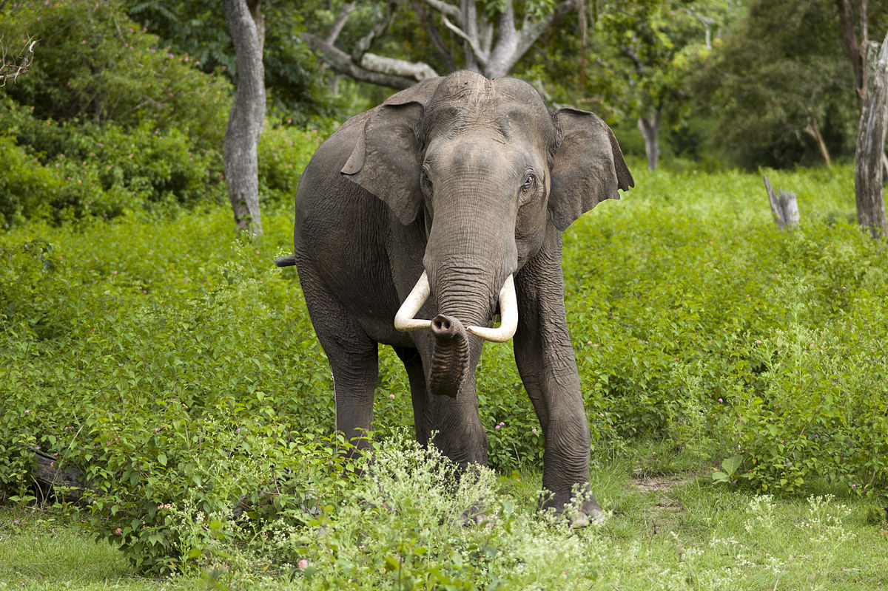
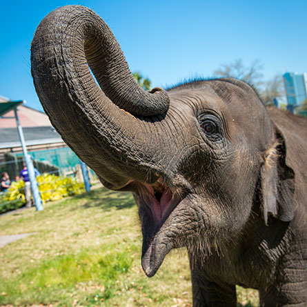
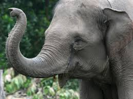
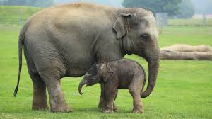
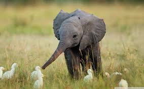
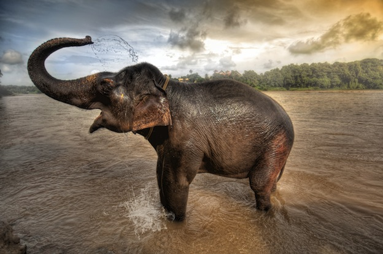

What is an Asian elephant?
The Asian elephant is the only living species of the genus Elephas left today. Asian elephants are extremely sociable, forming groups of six to seven related females that are led by the oldest female. Like other elephants, these groups occasionally join others to form herds. However, this herding only happens for a relatively short periods of time.
How many Asian elephants are left on Earth?
There are between 35,000 and 40,000 wild Asian elephants left today. Many pochers kill these elephants for their tusks. In the face of rapidly growing human populations, the Asian elephants' habitat is shrinking fast and wild elephant populations are mostly small, isolated, and unable to mingle as ancient migratory routes are cut off by human settlements.
    Where do Asian elephants live?
Asian Elephants typically live in grasslands, tropical evergreen forests, semi-evergreen forests, moist deciduous forests, dry deciduous forests and dry thorn forests. However, these animals are being forced to move out of their normal habitats due to poachers, different animals, and human population that is taking over their land.
Asian Elephants Extinction
Poachers all over the world hunt elephants mainly for trade. Elephant tusks are made of ivory which is very valuable in the world today. As much as 70 percent of the illegal ivory is currently taken from Asian Elephants then routed to China. Ivory is a rare, status-boosting luxury item that has, and still is, out of reach for most. Ivory that is sold in China goes for about $1,000 per pound on the streets of Beijing. If you want to help save elephants from becoming extinct, visit Save the Elephants to donate.